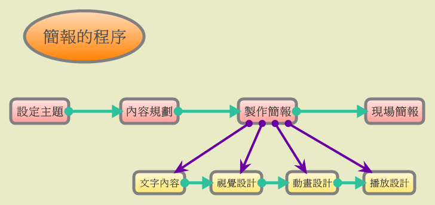

也紀念我們永遠的朋友 李士傑先生（Shih-Chieh Ilya Li）。
淺談簡報設計的技巧～以 Impress 為例（1）
＊基礎認識篇＊
簡報的精髓，是快速有效的溝通。不論是商業或團體活動，經常都會有機會向顧客或其他成員說明某個計畫。即使計畫的內容並不複雜，但想讓別人徹底瞭解自己所提的計畫內容，如計畫目的、目標、執行流程、配合事項和成果評估等，絕對不是一件容易的事。
為了能夠快速有效的溝通，因此進行簡報時，常常會使用一些輔助器材，最簡單常見的就是投影片（用來簡報的一組投影片，也稱為簡報，為了方便辨別起見，這裡 Attila 稱之為簡報檔）。傳統的投影片是一張張的透明塑膠片，製作和播放都比較麻煩，現在則幾乎都改用電腦來製作，優點當然就是簡單、快速以及容易播放。
製作簡報檔雖然變容易了，但是能做好的人卻不多。最常見的毛病，就是簡報的內容繁雜，很難看出重點到底是什麼，最糟的是還把口頭要講述的東西完全放進簡報檔內，讓簡報檔完全失去輔助講解的功能。說真的，自從 Attila 略懂簡報軟體以來，不論是參加工作上所必須的會議，還是為了增長知識所玩的研討會，常常覺得主講人如果不使用簡報檔，講解的效果或許還會更好呢！
許多優秀的演講者，有時上台並不會準備簡報檔，卻也不會因此而讓演講失色。因為有些主題、場合和觀眾水準等因素，根本就不需要簡報檔也能達到預期的效果！要是畫蛇添足，準備了一個對於演講（也就是溝通）沒有加分效果的簡報檔，那麼用了只是多此一舉，徒增準備工作的繁雜勞累。勉強為之的東西，品質和效果通常都不會好到哪裡去。所以要製作簡報檔之前，還是先花個幾分鐘思考一下，到底有沒有必要吧！
若決定要製作，在開始下手之前，還應該要瞭解簡報的程序。
很多人製作簡報檔的方式通常都是想到什麼就放什麼，上台時就依序照本宣科，很少去思考該怎麼做好一個簡報檔：主題是什麼？應該有哪些內容？內容如何配置？圖文怎麼搭配？內容的前後順序該怎麼安排？哪些地方可以運用多媒體，好達到聚焦的效果？實際簡報時，安排的方式是增色還是減分？這些問題很多人從來都不思考，自然很難做出一份好的簡報檔！
為了容易解說起見，大家可先參考底下的圖：

圖1：簡報的程序
大家或許會認為第一個步驟是廢話，事實上這是一個非常重要得開始，因為簡報要讓人家懂，主題一定要明確單一，絕對不能含糊多樣。例如：簡報的主題為「瞭解圖書館」，看到的人不免會想，這到底是要讓人瞭解圖書館的什麼？建築外觀？館藏內容？還是先進的索引系統？多數人通常會認為這樣的主題等同於圖書館的簡介，如果只是簡介，那可能和自己原本所知道的圖書館沒多大的不同，想要聽簡報的興趣自然大減。
若真要說這個主題有什麼優點，那就是可講的範圍很廣，而優點也正是缺點：過於廣泛而沒有焦點。
所以設定主題時，一定要明確有力，讓人家知道你想講的是什麼。有些人會為了把各個層次的群眾都納進來，而把主題訂的模稜兩可。不過根據 Attila 的實務經驗，越模糊的主題，越難吸引到目標觀眾群，所以設定主題最重要的關鍵還是要聚焦，針對想溝通的對象來設定主題會比較好。
當主題確定之後，再來就是要好好想想該放哪些內容。內容應該要以能讓觀眾瞭解主題為核心，無法說明主題或相關性不大的資訊，儘量不要放，以免內容冗長並妨礙觀眾對主題的理解。
決定內容之後，如何呈現也是一門大學問。基本上，文字內容要簡短有力，長篇大論絕對是殺死觀眾接受內容的兇手。必要時加入有關的圖片和圖表，讓訊息的傳達比較多且完整，甚至還有讓觀眾有想像空間的效果。
完成簡報檔後，當然就是帶著它上台啦！簡報的程序和預設的效果，是還沒上台就要想好的，上台後的簡報檔，只是幫自己達到完美「表演」的幫手，藉由簡報檔上的圖文和動態效果，讓自己的「舌粲蓮花」更加「美妙誘人」！不過大家一定要記住，簡報檔不是主角，身為演講者的你才是。簡報檔是幫你把這場演講表演的更好，讓觀眾能真正瞭解你所講的主題，可不要讓簡報檔喧賓奪主！
以上只是簡單說明製作簡報的重要流程和設計時該注意的大原則，只要能把握住這些原則，時時以有效溝通四字訣為檢驗標準，必然可以做出具有良好輔助效果的簡報檔。
設計的核心概念：簡約
瞭解簡報的程序後，當然要進入實際製作的階段。只是，簡報檔該怎麼規劃和設計比較好呢？
其實簡報的規劃和設計，並沒有什麼原則可遵循。如果硬要說有的話，萬變不離其宗就只有一項，那就是簡明易懂。這個原則說起來簡單，做起來卻很困難，因為要和一群人溝通某些觀念而還必須動用簡報檔，內容通常都不會太少！
話雖如此，也不能像寫書一樣，在簡報檔內塞一大堆文字和圖片！試問，要觀眾一邊聽講，一邊還要仔細閱讀投影片的內容，有多少人會真的專心致志的照做呢？就算自己遇到這種情形都會想逃吧！
那該怎麼做會比較好呢？簡約或許是大家可以參考的答案。
簡約，是簡明易懂的真正關鍵和精髓。如果有張純白的紙，上面只有一個黑色的墨點，相信任何人一看都會注意到這個墨點；要是在五顏六色的花紙上，想找出這個墨點來，除了專注還得細心找才行。同理，把內容加到投影片時一定要考慮幾個問題：這是我想表達的東西嗎？有沒有過於冗長繁雜的東西？內容彼此間會不會互相干擾？有什麼方法能讓觀眾更專注於主題？觀眾容易理解嗎？無論如何一定要緊抓著自己想要傳達的主題，關聯性不大或其他無關緊要的東西，不是不要放，就是要拿掉！（即使是公司所重視的CIS（企業識別系統）也只要出現在首頁的投影片就好，不必每頁都放）
不擺或拿掉無關緊要的東西，就是所謂的去除雜訊。雜訊不但會干擾人們對於資訊的瞭解，還會讓人產生疲乏感，進而忽略或排斥相關資訊，最嚴重時會讓人拒絕任何資訊。一旦到了這個「境界」，任何的溝通方法都不會產生任何效果。所以做好一張投影片之後，一定要靜下心來，屏除內心的雜慮，根據自己的主題和溝通目標，重新把投影片檢視一遍，看看哪些東西是該刪掉的！
當然，去除雜訊的標準是很難拿捏的，而且也因人而異。除了經驗之外，多參考評價優良的簡報作品，不妨找些其他觀眾，先對他們試講看看，然後根據他們反應來檢討修改，都是不錯的方法。
除了去除雜訊之外，另外一個和簡約有關的技巧就是留白。去除雜訊只是把不相干的東西剔除，留白則是刻意留下空白的地方，目的當然是刻意卻又不留痕跡得讓主題更加突顯，「強迫」觀眾去注意預先設定好的地方。這部份的技巧牽涉到版面設計的運用，而且可用的方法很多，這裡只示範二種常見的方式讓大家參考。
之後將示範的實作例子就是以「簡約」為核心概念，針對單純文字、圖文共用等狀況，分別說明在簡約的大前提下，投影片製作的相關概念和技巧。只是 Attila 並沒有刻意去設計一個包含所有技巧的範例，以免讓大家誤會，一份好的簡報檔應該要含括本文提到的所有技巧。
畢竟，不同的技巧各有其適用的時機，設計者應該要隨機應變，視主題、觀眾和場合而定，其運用之妙，存乎一心。因此，簡約不只是一種技巧，還是一種藝術和境界。最佳的註解，Attila認為莫過於《老子》：「大音希聲，大象無形。」（第四十一章）期望大家多多揣摩之！
閱讀全文前該有的編輯技巧
本文所要分享的內容，並不打算從簡報檔的起始製作開始，而是針對不同內容安排的投影片來說明設計概念和編輯技巧，因此不會引導大家逐步完成一個完整的簡報檔。至於相關的範例教學，採用的編輯軟體是 OpenOffice.org Impress，因此閱讀本文的朋友，對於 Impress 最好有一定的操作經驗和技巧。
該具備哪些編輯技巧呢？底下就是 Attila 認為該具備的技巧：
1.文字的輸入和編修：這一點若不會，那根本就什麼都不必談了。
2.文字格式的設定：字型的選擇和大小、顏色、粗體、斜體等的設定。
3.加入圖片與圖片設定：圖片的加入、縮放和線條的設定等。
4.表格設定：加入表格和表格的美化。
5.圖表設定：加入圖表和圖表的美化。
6.增減投影片：投影片幾乎不可能只做一張，若連這個也不會，那…別再往下看啦！
7.放映簡報檔：做好了卻不會放映，那檔案做出來幹什麼？
至於套用範本、配色等，這一類幾近不算技巧的部份就更不用說了。當然，若想要把簡報檔做的更棒，會的東西自然要更多。至於本文的內容，重點在於設計簡報的概念，不是操作技巧，所以不會刻意介紹什麼特別的功能，相關的編輯技巧全在上述七點的範圍內，但投影片的效果絕對值得大家期待。
使用的軟體與下載
簡報軟體相當多，功能上雖有些不同，實際上大多是大同小異，只要不是功能陽春的版本，理論上本文所提到的東西都能做的出來。所以本文只選擇其中一種軟體，作為說明與教學之用，也就是開放原始碼的 OpenOffice.org Impress。
OpenOffice.org Impress 是 OpenOffice.org 的成員之一。有關 OpenOffice.org，大家可以參考下列的網頁：
安裝時，唯一要注意的就是必須要安裝Java的運作環境。若作業系統內沒有安裝，那麼下載回來的檔案已內含 Java，需要的話可一併安裝。
最後，Attila 希望大家閱讀全文之後能夠發揮舉一反三的精神，千萬別因為使用軟體之不同，就認為自己不會作或作不出來。或許因此需要一點摸索的時間，但以 Attila 的經驗來說，應該不會遭遇到什麼困難才是。
（待續）
您也許有興趣閱讀以下文章:
- 淺談簡報設計的技巧～以 Impress 為例（4） - 2009-10-25
- 淺談簡報設計的技巧～以 Impress 為例（3） - 2009-10-11
- 淺談簡報設計的技巧～以 Impress 為例（2） - 2009-09-25
E-Mail：contact@openfoundry.org Address：台北市南港區研究院路2段128號 中央研究院資訊科學研究所 . 隱私權條款. 使用條款